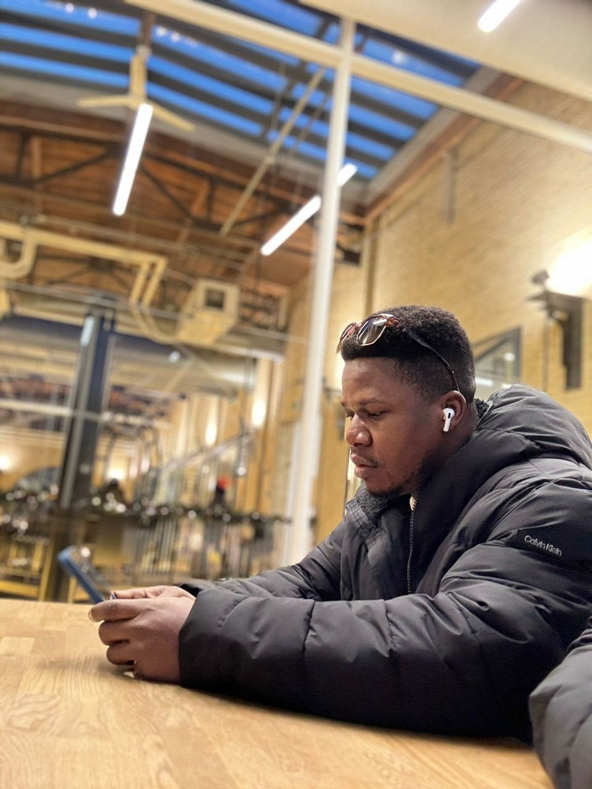

YASIR OLUWASEUN SHUAIB

PROFESSIONAL SUMMARY
A motivated employee who learns quickly in a fast-paced, high-volume
environment. Consistently adheres to safety standards, holding
certifications in Corporate Health Works for safe operation of overhead
cranes, hoists, safe lifting, and rigging. Additionally, possesses a WHMIS
2015 certificate for Manitoba workers in provincially-regulated
workplaces. Maintains open availability and flexibility to work various
shifts.
Work experience
Carfair composite - Production Worker
Winnipeg, MB :11/2022 - 10/2023
- Improved production efficiency by streamlining assembly line
processes and implementing time-saving techniques.
- Reduced waste in the production process by monitoring materials
usage and adjusting procedures accordingly.
- Enhanced product quality by conducting regular inspections and
identifying areas for improvement.
- Collaborated with team members to optimize workflow, resulting in
increased productivity and reduced downtime.
WOW 1-Day Painting - Painter
Winnipeg, MB :05/2022 - 10/2022
- Enhanced appearance of residential and commercial spaces by
skillfully applying paint, wallpaper, and other finishes.
- Delivered high-quality painting services on time and within budget
for a variety of clients.
- Prepared surfaces for painting by cleaning, sanding, and repairing
defects to ensure smooth results.
- Increased client satisfaction by providing accurate color
consultations and recommendations.
Shoprite Ikeja City Mall - Warehouse Worker
Lagos, Nigeria :01/2021 - 03/2022
- Enhanced warehouse efficiency by implementing effective inventory
management and organization systems.
- Reduced order processing times with streamlined picking, packing,
and shipping procedures.
- Improved workplace safety by conducting regular inspections and
addressing potential hazards promptly.
- Increased accuracy of inventory records through meticulous
documentation and regular audits.
Tinolux Paint - Painter
Lagos, Nigeria :06/2015 - 12/2019
- Maintained a clean and organized workspace, minimizing disruptions
for clients during projects.
- Exceeded client expectations by consistently delivering high-quality
workmanship within established timelines.
- Consistently met safety regulations while working on-site at both
residential and commercial properties.
- Painted surfaces using brushes and paint rollers.